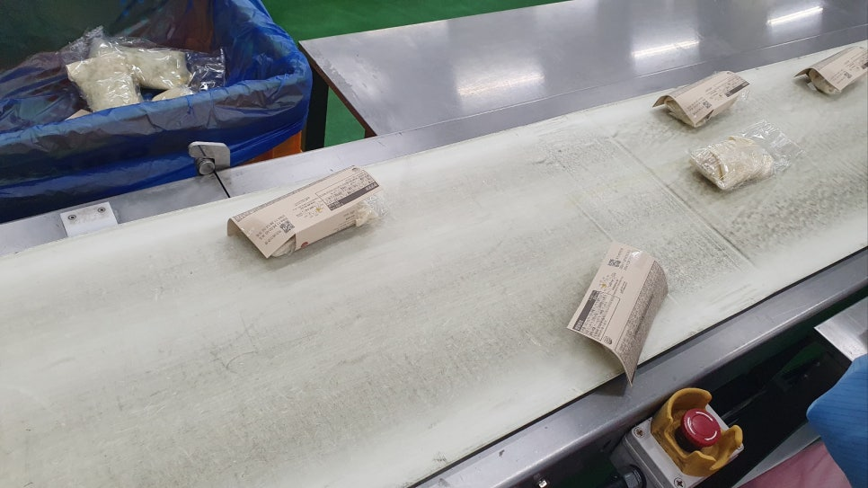
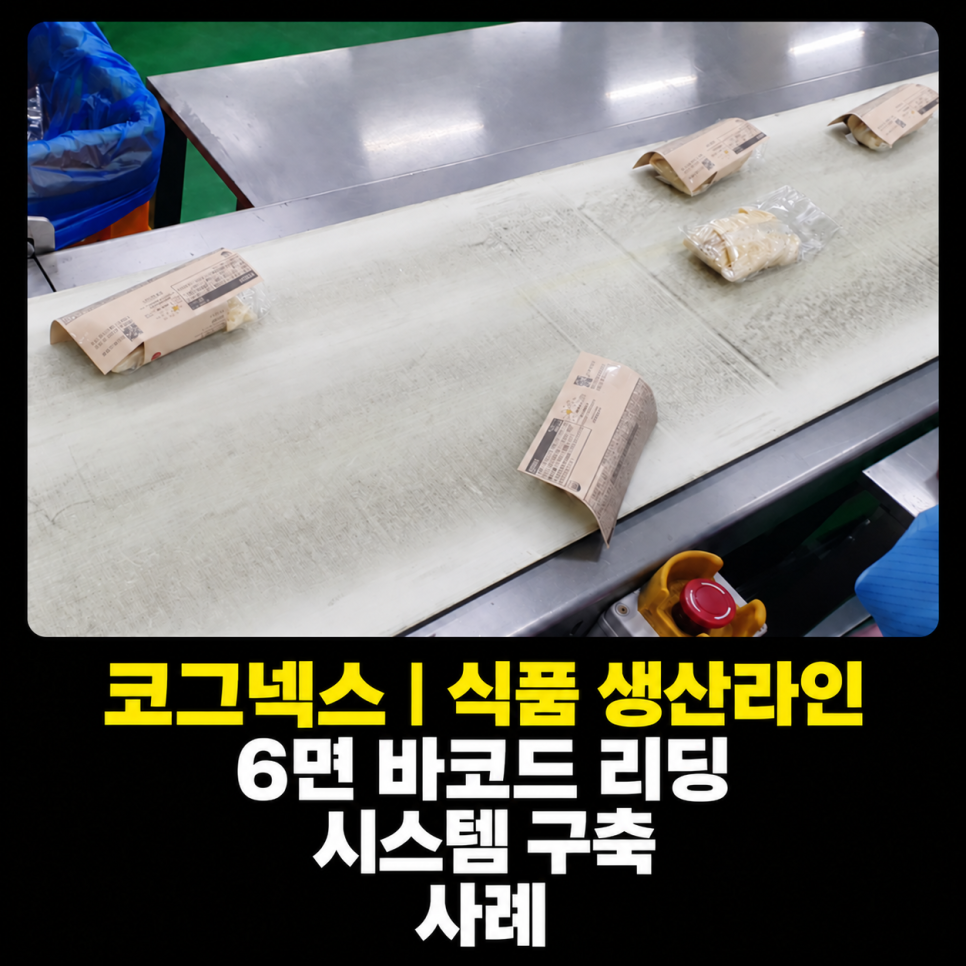
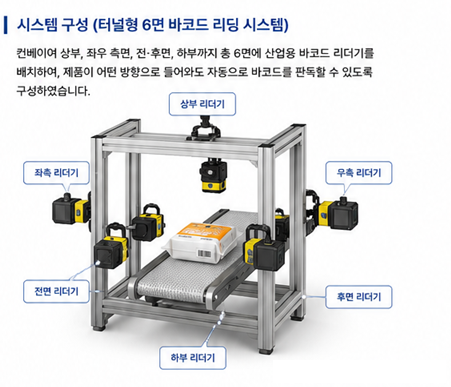

식품 · 컨베이어 · 바코드
식품 생산라인 터널형 6면 바코드 리딩 시스템 사례
터널형 다면 바코드 리딩
무작위 방향으로 투입되는 식품을 상·하·좌·우·전·후면에서 판독한 터널형 시스템 사례입니다. 적용 제품 범위에서 별도 트레이닝이나 레시피 변경 없이 바코드를 탐색하도록 구성했습니다.

Project Summary
프로젝트 핵심 구성
- 산업
- 식품 · 컨베이어
- 검사·자동화 대상
- 식품 생산라인 터널형 6면 바코드 리딩
- 주요 기술
- 터널형 다면 바코드 리딩
- 적용 구분
- 프로젝트 사례
01 · Overview
프로젝트 개요
무작위 방향으로 투입되는 식품을 상·하·좌·우·전·후면에서 판독한 터널형 시스템 사례입니다. 적용 제품 범위에서 별도 트레이닝이나 레시피 변경 없이 바코드를 탐색하도록 구성했습니다.
02 · Problem
프로젝트에서 해결해야 했던 문제
고객사는 다양한 식품을 생산하는 생산라인을 운영하고 있었습니다.
작업자는 제품을 제조한 후 컨베이어 벨트 위에 하나씩 올려놓는 것이 아니라 무작위 방향으로 제품을 투입하고 있었습니다.
제품마다
바코드 위치가 다르고
바코드 크기가 다르며
제품 형태도 서로 달랐기 때문에
기존 방식으로는 안정적인 바코드 판독이 어려웠습니다.
또한 제품 종류가 많아 제품이 변경될 때마다 레시피를 수정하거나 별도로 트레이닝하는 방식은 생산성을 크게 떨어뜨리는 문제가 있었습니다.
- 제품 공급 방향 불규칙
- 바코드 위치·크기 차이
- 다품종 레시피 관리
03 · System
검사·자동화 시스템 구성
무작위 방향으로 투입되는 식품을 상·하·좌·우·전·후면에서 판독한 터널형 시스템 사례입니다. 적용 제품 범위에서 별도 트레이닝이나 레시피 변경 없이 바코드를 탐색하도록 구성했습니다.
6면 바코드 탐색
코드 판독
판독 결과 처리

04 · Inspection
프로젝트 배경
식품 생산라인에서는 제품 종류가 많고 생산 속도가 빠르기 때문에 바코드를 안정적으로 읽는 것만으로도 쉽지 않은 경우가 많습니다.
특히 작업자가 제품을 컨베이어 위에 일정한 방향으로 올려놓지 않고 무작위로 투입하는 생산라인에서는 바코드가 어느 면을 향하고 있는지 예측할 수 없어 일반적인 바코드 리더기로는 안정적인 판독이 어렵습니다.
이번 프로젝트는 터널형 6면 바코드 리딩 시스템을 구축하여 제품이 어떤 방향으로 투입되더라도 자동으로 바코드를 판독할 수 있도록 구축한 사례입니다.
05 · Inspection
고객의 고민
고객사는 다양한 식품을 생산하는 생산라인을 운영하고 있었습니다.
작업자는 제품을 제조한 후 컨베이어 벨트 위에 하나씩 올려놓는 것이 아니라 무작위 방향으로 제품을 투입하고 있었습니다.
제품마다
바코드 위치가 다르고
바코드 크기가 다르며
제품 형태도 서로 달랐기 때문에
기존 방식으로는 안정적인 바코드 판독이 어려웠습니다.
또한 제품 종류가 많아 제품이 변경될 때마다 레시피를 수정하거나 별도로 트레이닝하는 방식은 생산성을 크게 떨어뜨리는 문제가 있었습니다.

06 · Inspection
ASPEC이 제안한 솔루션
이번 프로젝트에서는 터널형 6면 바코드 리딩 시스템을 설계하여 구축하였습니다.
컨베이어를 통과하는 제품을
상부
좌측
우측
전면
후면
하부
에서 동시에 판독할 수 있도록 구성하여,
제품이 어떤 방향으로 투입되더라도 최소 한 개 이상의 리더기가 바코드를 인식할 수 있도록 시스템을 설계하였습니다.
07 · Inspection
다양한 제품도 레시피 변경 없이 자동 판독
이번 프로젝트의 가장 큰 특징은 레시피 변경이 필요 없었다는 점입니다.
일반적으로 제품 종류가 많아지면
제품별 레시피를 관리하거나
제품별 바코드 위치를 등록하거나
모델 변경 시 다시 설정해야 하는
경우가 많습니다.
하지만 이번 시스템은 제품이 감지되면 자동으로 바코드를 탐색하여 판독하도록 구성하였습니다.
따라서
제품 종류가 변경되어도
바코드 크기가 달라도
바코드 위치가 달라도
별도의 트레이닝이나 레시피 변경 없이 안정적으로 바코드를 읽을 수 있도록 구축하였습니다.
08 · Inspection
다양한 바코드 규격에도 안정적으로 대응
식품 생산라인에서는 제품마다 사용하는 바코드 규격과 크기가 서로 다른 경우가 많습니다.
이번 프로젝트 역시 다양한 제품이 하나의 생산라인에서 생산되고 있었지만,
시스템이 자동으로 바코드를 탐색하여 판독하도록 구성하여 작업자의 별도 설정 없이도 안정적인 운용이 가능하도록 하였습니다.
제품 변경 시에도 프로그램을 수정하거나 레시피를 변경할 필요가 없어 운영 편의성을 크게 향상시킬 수 있었습니다.
09 · Inspection
빠른 생산라인에서도 안정적인 판독
식품 생산라인은 생산 속도가 빠르기 때문에 바코드를 읽지 못하면 작업자가 직접 확인해야 하고 생산 흐름에도 영향을 줄 수 있습니다.
이번 프로젝트에서는 터널형 다면 판독 구조를 적용하여
바코드 미판독 최소화
빠른 판독 속도 확보
생산라인 택타임 유지
가 가능하도록 시스템을 최적화하였습니다.
10 · Inspection
이번 프로젝트를 통해 고객이 얻은 효과
이번 시스템 구축으로 고객사는 다음과 같은 효과를 얻을 수 있었습니다.
✔ 제품 방향과 관계없는 자동 바코드 판독
✔ 터널형 6면 바코드 리딩 시스템 구축
✔ 다양한 제품 자동 대응
✔ 레시피 변경 없이 자동 운용
✔ 제품별 트레이닝 불필요
✔ 작업자의 육안 확인 최소화
✔ 바코드 미판독 감소
✔ 생산라인 택타임 유지
✔ 생산성 향상
✔ 물류 및 생산 이력 관리 효율 향상
11 · Inspection
ASPEC의 생각
바코드 리딩 프로젝트는 단순히 리더기의 성능만으로 해결되지 않습니다.
제품이 어떻게 공급되는지,
바코드가 어디에 부착되는지,
생산 속도는 어느 정도인지,
제품이 얼마나 다양한지까지 모두 고려하여 시스템을 설계해야 실제 생산라인에서 안정적으로 사용할 수 있습니다.
이번 프로젝트는 단순히 바코드를 읽는 것이 아니라 생산 방식 자체를 분석하여 고객이 별도의 레시피 관리 없이 운영할 수 있도록 설계한 사례였습니다.
ASPEC은 식품, 자동차, 제약·바이오, 전자부품 등 다양한 산업 분야에서 머신비전, OCR, 산업용 바코드 리더기 시스템을 구축하며 축적한 경험을 바탕으로 고객의 생산 환경에 가장 적합한 자동화 솔루션을 제안하고 있습니다.
Operation
현장 적용과 운영 조건
무작위 방향으로 투입되는 식품을 상·하·좌·우·전·후면에서 판독한 터널형 시스템 사례입니다. 적용 제품 범위에서 별도 트레이닝이나 레시피 변경 없이 바코드를 탐색하도록 구성했습니다.
- 제품 공급 방향 불규칙
- 바코드 위치·크기 차이
- 다품종 레시피 관리
Result
적용 효과
- 제품 방향과 관계없는 자동 바코드 판독
- 터널형 6면 바코드 리딩 시스템 구축
- 다양한 제품 자동 대응
- 레시피 변경 없이 자동 운용
- 제품별 트레이닝 불필요
- 작업자의 육안 확인 최소화
- 바코드 미판독 감소
- 생산라인 택타임 유지
- 생산성 향상
- 물류 및 생산 이력 관리 효율 향상
Engineering
ASPEC의 머신비전 시스템 설계 방식
검사 대상의 재질과 형상, 설치 공간과 생산 조건에 맞춰 장비·광학·소프트웨어와 설비 연동을 함께 검토합니다.
- 제품 공급 방향 불규칙
- 바코드 위치·크기 차이
- 다품종 레시피 관리
08 · Related Cases
관련 구축사례
비슷한 공정의 자동화를 검토하고 계신가요?
검사 대상과 불량 샘플, 설치 공간, 택타임을 알려주시면 적용 구성을 검토해 드립니다.